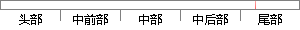

在问卷列表中找到刚添加的问卷，点击问题管理，进入问题列表页面。
片段位置图

相似结果|
相似片段 1：添加题目。你电可以通过点击菜单栏的问卷列表后点击Additem按钮进入添加问题页进入题目的添加。．54．图5-7试题管理页面
相似片段 2：相关信息后点击“提交”，返回“修改问题”页面，并显示子问题添加已经成功与预期一致添加或者删除子问题只能够在修改问题时进行，不太方便1.5问卷列表点击“调查问卷管理”子菜单，能够展现“问卷列表”49续表
相似片段 3：的页面会返回到问题列表页面，问卷管理员可选择该页面提供的其他问卷管理功能，继续完善问卷的各个相关属性的设置。体育产业调查管理系统提供了问卷预览功能，点击问题列表的“预览问卷”即可进行问卷的预览，预览问卷
相似片段 4：在该功能模块中，系统管理员通过系统提供的功能按纽，如图：图 6-28 问题管理在左侧列表中显示的是要发布的问卷标题，右侧是与问卷相对应的答案选择列表，通过点击页面下方的功能按纽来进行设置问卷状态或删除
相似片段 5：。您也可以通过点击菜单栏的问卷列表后点击 Additem 按钮进入添加问题页进入题目的添加。1、单选 的设定例： 选项一 选项二 选项三可设置是否必须选择。2、多选 的设定3、单行输入 的设定例：用于
相似片段 6：编辑。点击添加问卷和导入问卷，可以直接从问卷库中直接导入问卷，也可以管理员创建问卷。如图4．14所示。图4．14评估子对象管理流程图2．评估指标体系管理用户登陆系统后，点击“指标体系”，系统进入指标体系管理页面，首先是指标体系列表，选择任意指标体系可进入相应指标体系中，对指标进行增、删、改、查。
相似片段 7：给予成功提示。j) 系统返回容器模板列表页面。8） 管理问卷问题27参与者：系统管理员，医院管理员主要功能：增加，编辑，删除，查看问卷的问题（题库），问题的类型有文本，单选，多选，日期，图片等几个类型
相似片段 8：不同的指标体系。5.4.1 建立调查问卷55图 5-7 创建问卷流程图调查问卷建立采用向导方式具体分为三步：56图 5-8 系统首页点击左侧菜单栏中的【试卷管理】按钮，进入文件管理列表页面如图 5-9
相似片段 9：（已有企业进行填报）时对问卷进行修改，系统会进行提示，在系统左侧菜单栏中点击【问卷管理】进入问卷管理列表页面，点击列表中【修改】按钮，进入问卷修改页面。如图 5-20 所示。如图 5-20 问卷修改页面
|
※ 片段修改建议 ※
近似词参考：- 问题：题目
- 管理：办理 经管 治理
- 问题：题目
系统自动生成语句： 在问卷列表中找到刚添加的问卷，点击题目办理，进入题目列表页面。
注：本片段修改建议为系统自动生成，仅供参考。